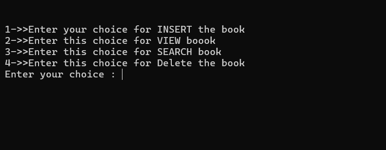
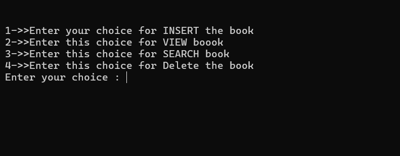

Library Management System in C
Overview
This is a terminal-based Library Management System implemented in C. It allows the user to insert, view, search, and delete books from a library collection. This project is ideal for beginners learning arrays, structures, functions, and console input/output.
Features
- Insert Books: Add new books to the library, including ID, Title, and Author.
- View Books: Display all available books in the library.
- Search Books: Find a book by its ID.
- Delete Books: Mark books as deleted.
- Console Menu: User-friendly menu interface for easy operations.
Technology
Programming Language: C
Compiler: Turbo C / GCC
Libraries Used: stdio.h, conio.h, stdlib.h
Data Structure
struct Book {
int id;
char title[40];
char author[40];
int isdeleted;
};
id → Unique book identifier
title → Book title
author → Author name
isdeleted → Flag for deleted books (0 = available, 1 = deleted)
All books stored in: struct Book booklist[100]; (Max 100 books)
Usage
- Open the project in a C compiler (Turbo C, Dev C++, or GCC).
- Compile and run the program.
- Follow on-screen menu to Insert, View, Search, or Delete books.
- Repeat operations until exiting the program.
Screenshots
 

Video Demo
Limitations
- Maximum of 100 books only.
- Console-only I/O, no file handling.
- Book deletion marks as deleted but doesn't remove from memory.
- Uses
gets(), which may cause buffer overflow for large inputs.
Future Improvements
- Implement file handling to store data permanently.
- Replace
gets()withfgets()for safer input. - Add update, sorting, and multi-copy support.
- Add GUI for better user experience.
Author
Chetan Dhapkas
Engineering Student | Library Management System Project